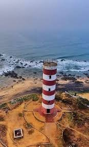

Lighthouse
The Lighthouse in Vizag is a popular tourist attraction that offers panoramic views of the coastline and the city. It is a great spot for photography and enjoying the scenic beauty of the sea and the surrounding area.
Location: Visakhapatnam, Andhra Pradesh, India
Activities: Sightseeing, photography
Transportation: Easily accessible by road, located near major bus routes and the Vizag railway station.